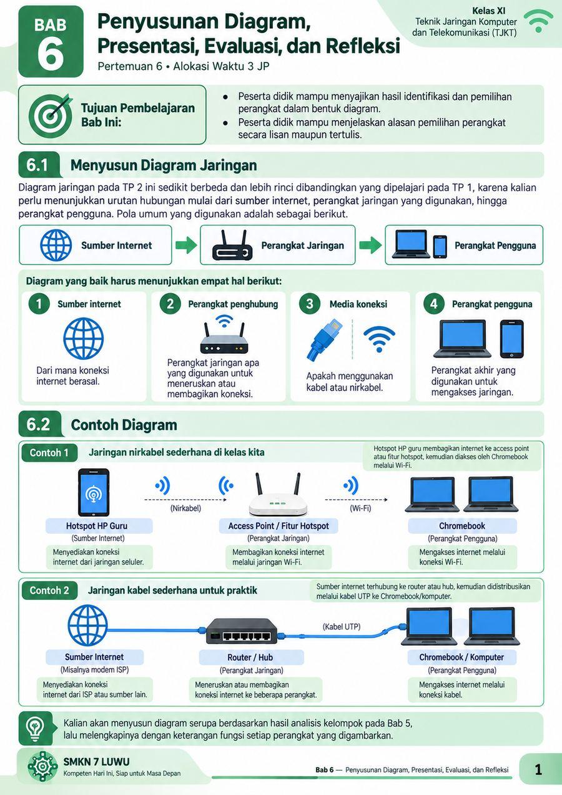
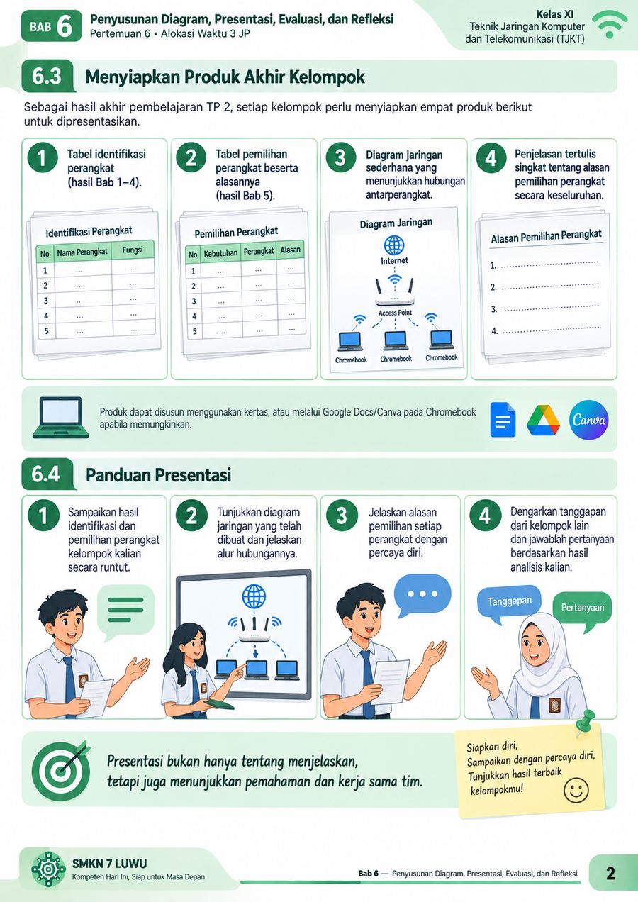
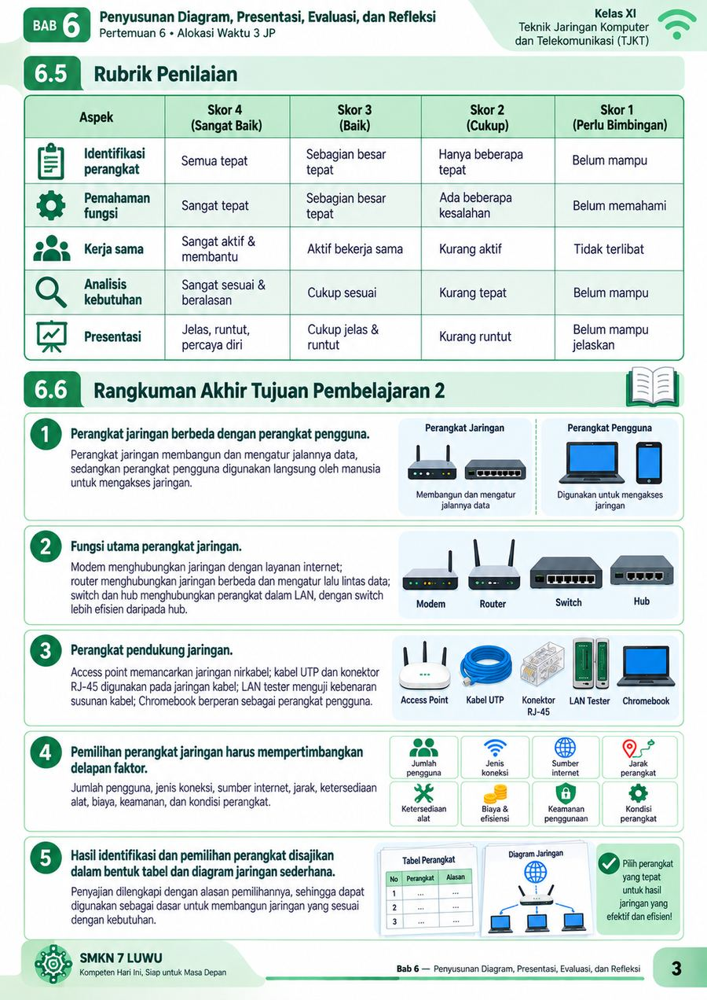

Bab 6 — Penyusunan Diagram, Presentasi, Evaluasi, dan Refleksi
TP 2 · Pertemuan 6 · Alokasi Waktu 3 JP
Geser ke kiri/kanan untuk berpindah halaman



Materi Bab 6 disajikan sebagai halaman bergambar agar lebih menarik dibaca. Pada HP, cukup geser halaman ke kiri atau kanan.